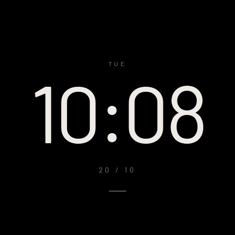
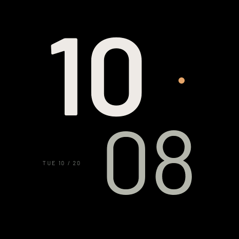
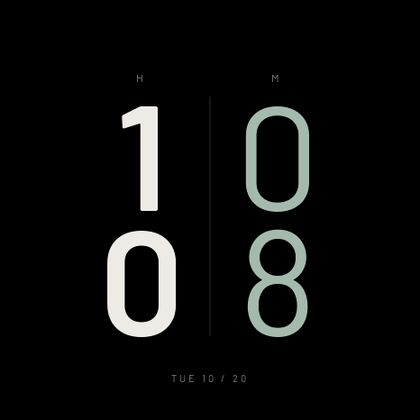
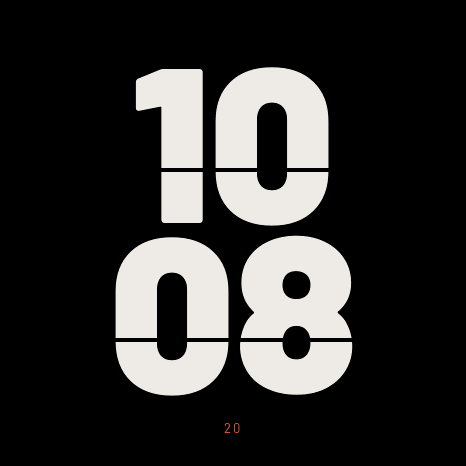
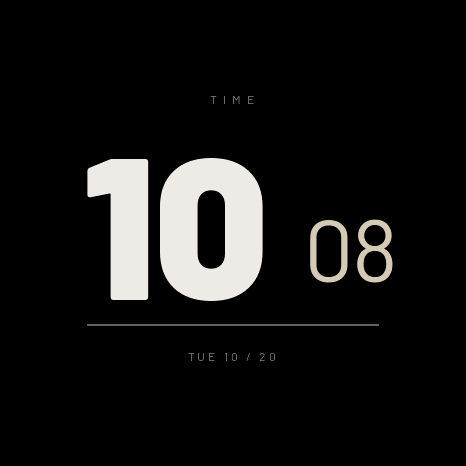

<!doctype html><html lang="zh-CN"><meta charset="utf-8"><meta name="viewport" content="width=1080"><title>极简字体</title><link rel="stylesheet" href="style.css">
    <main class="poster gallery-six" data-number="2"><header><div class="brand">soRound OS <span>明天 · 正式版见</span></div><div class="kicker">01 / 新表盘 · TYPE</div><h1>把时间，<br>放大一点。</h1><p class="sub">六种排版，让数字自己说话。</p></header><div class="content"><div class="gallery cols-3"><figure class=""><figcaption>STACK · 堆叠</figcaption></figure><figure class=""><figcaption>AIR · 轻盈</figcaption></figure><figure class=""><figcaption>OFFSET · 错位</figcaption></figure><figure class=""><figcaption>COLUMN · 双列</figcaption></figure><figure class=""><figcaption>CUT · 切分</figcaption></figure><figure class=""><figcaption>EDITION · 刊号</figcaption></figure></div></div><footer><span>原生 UI 渲染 · 画面数值为示例</span><span>02 / 10.23</span></footer></main></html>